Bildnachweise
Die Pflanzenfotos in Finder, Wunschliste und Pflanzenbuch stammen aus Wikimedia Commons und stehen unter den jeweils angegebenen freien Lizenzen. Sie wurden auf 480 Pixel Breite verkleinert und werden mit der App ausgeliefert. Eigene Fotos der Nutzerinnen und Nutzer ersetzen sie in der Anzeige.
| Pflanze | Urheber | Lizenz | Quelle | |
|---|---|---|---|---|
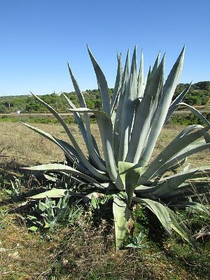 | Agave | Kolforn (Kolforn) I'd appreciate if you could mail me (Kolforn@gmail.com) if you | CC BY-SA 4.0 | Commons |
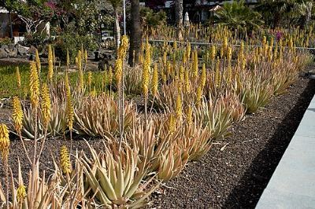 | Aloe Vera | Wouter Hagens | Public domain | Commons |
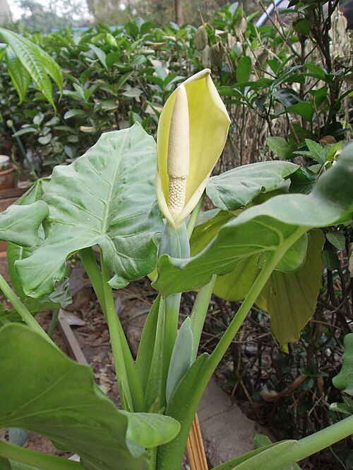 | Alokasie | unbekannt | CC BY-SA 3.0 | Commons |
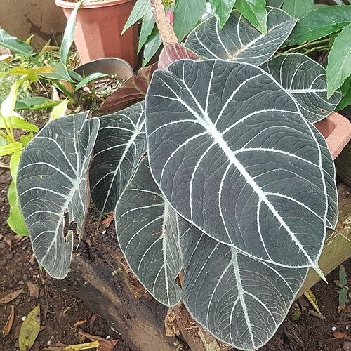 | Alokasie Black Velvet | Obsidian Soul | CC0 | Commons |
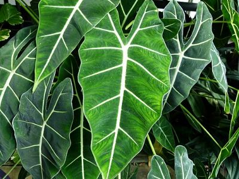 | Alokasie Frydek | basic_sounds [1] | CC BY-SA 2.0 | Commons |
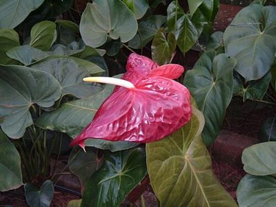 | Anthurie | unbekannt | CC BY-SA 3.0 | Commons |
| Anthurium clarinervium | unbekannt | CC BY-SA 3.0 | Commons | |
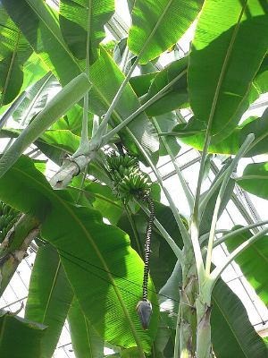 | Bananenpflanze | Raul654 | CC BY-SA 3.0 | Commons |
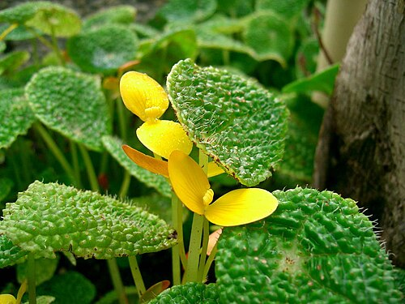 | Begonie | The original uploader was Hanson59 at German Wikipedia. | CC BY-SA 3.0 | Commons |
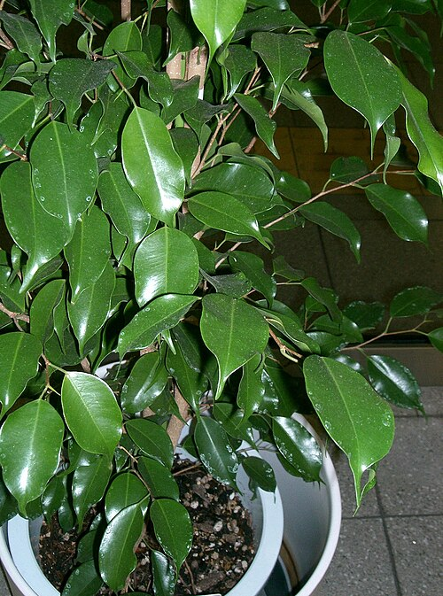 | Birkenfeige | KENPEI | CC BY-SA 3.0 | Commons |
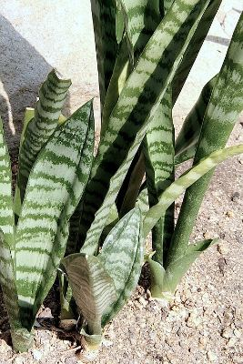 | Bogenhanf | Peter A. Mansfeld | CC BY 3.0 | Commons |
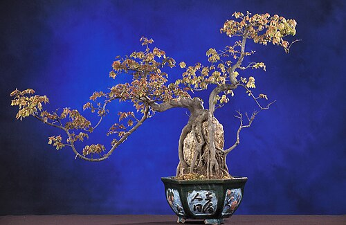 | Bonsai | Peggy Greb, USDA | Public domain | Commons |
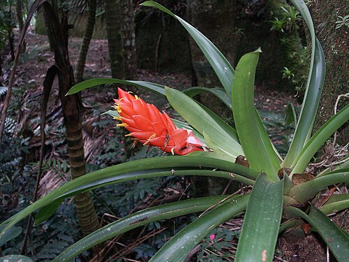 | Bromelie | Scott Zona | CC BY 2.0 | Commons |
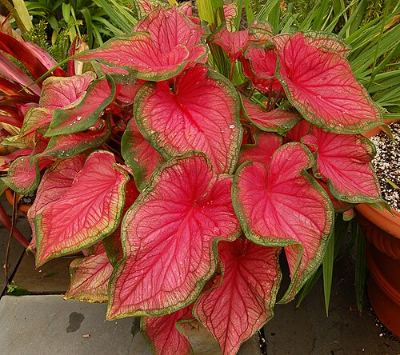 | Buntblatt | Photo by and (c)2006 Derek Ramsey (Ram-Man) | GFDL 1.2 | Commons |
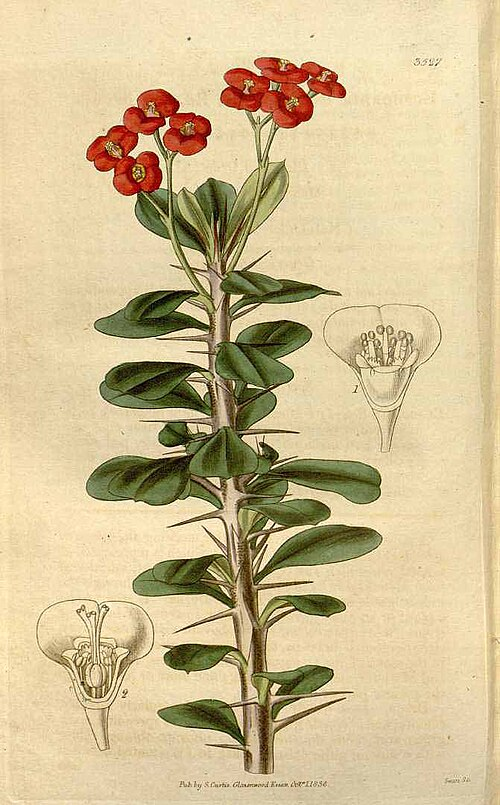 | Christusdorn | Curtis | Public domain | Commons |
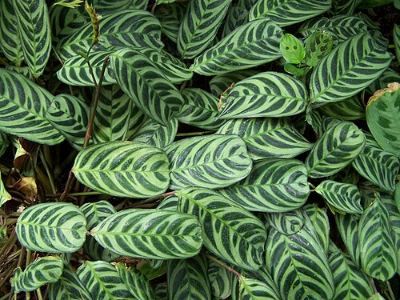 | Ctenanthe | Benutzer:Callipides | CC BY-SA 2.0 de | Commons |
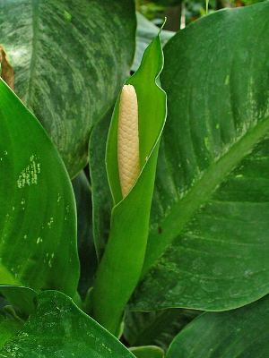 | Dieffenbachie | H. Zell | CC BY-SA 3.0 | Commons |
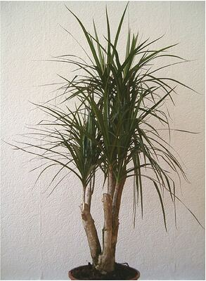 | Drachenbaum | Forest & Kim Starr | CC BY 3.0 | Commons |
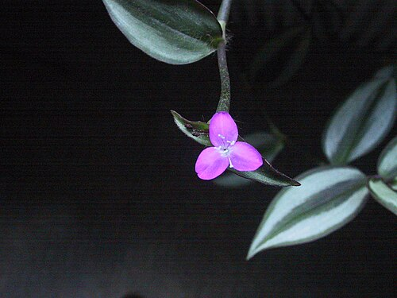 | Dreimasterblume | Ruestz | CC BY-SA 2.5 | Commons |
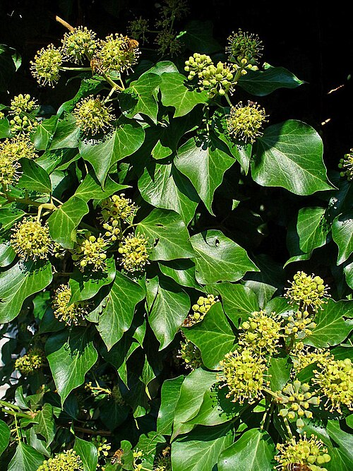 | Efeu | H. Zell | CC BY-SA 3.0 | Commons |
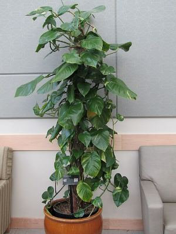 | Efeutute | Ben PL | CC BY-SA 4.0 | Commons |
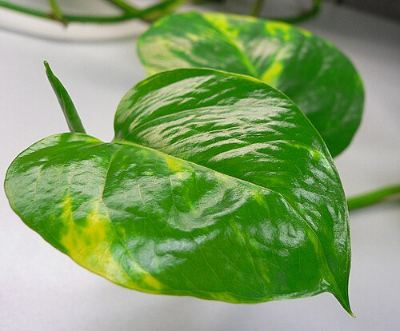 | Efeutute Marble Queen | unbekannt | Public domain | Commons |
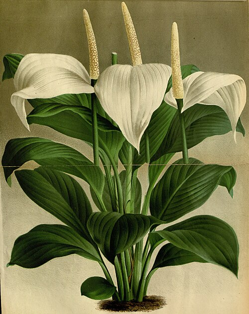 | Einblatt | Unknown authorUnknown author | Public domain | Commons |
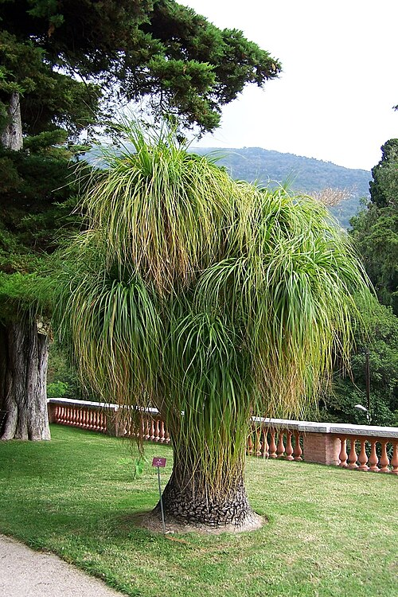 | Elefantenfuß | Berthold Werner | CC BY-SA 3.0 | Commons |
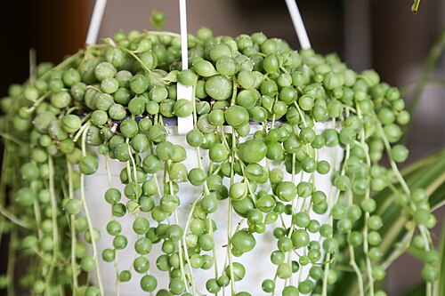 | Erbsenpflanze | Maja Dumat from Deutschland (Germany) | CC BY 2.0 | Commons |
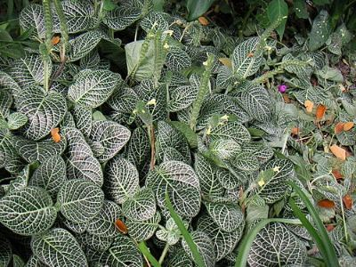 | Fittonie | Louise Wolff --darina 00:12, 7 May 2005 (UTC) | CC BY-SA 3.0 | Commons |
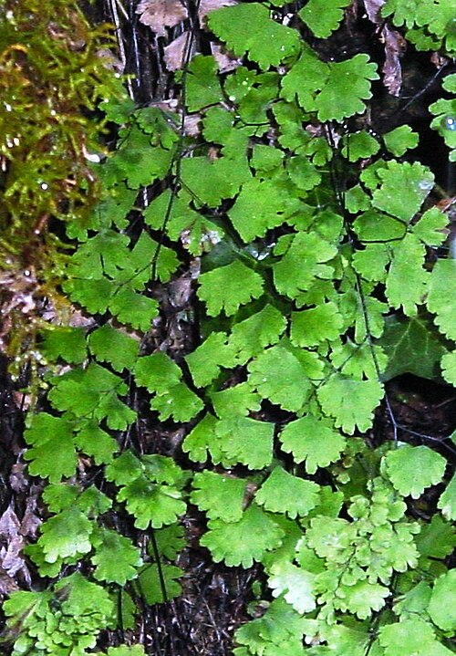 | Frauenhaarfarn | tato grasso | CC BY-SA 2.5 | Commons |
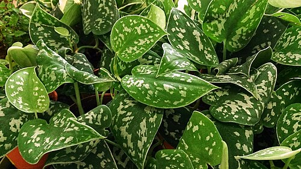 | Gefleckte Efeutute | Mokkie | CC BY-SA 3.0 | Commons |
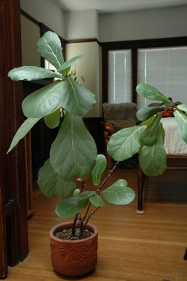 | Geigenfeige | No machine-readable author provided. Morrisjm assumed (based on copyright claims | CC BY-SA 3.0 | Commons |
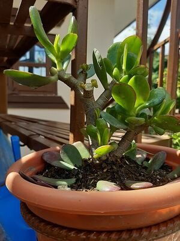 | Geldbaum | Frank Vincentz | CC BY-SA 3.0 | Commons |
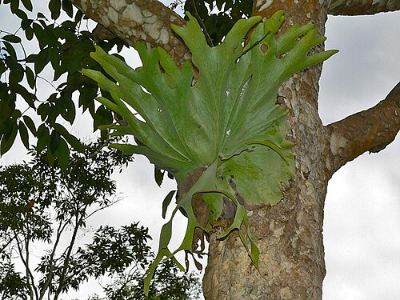 | Geweihfarn | Bernard DUPONT from FRANCE | CC BY-SA 2.0 | Commons |
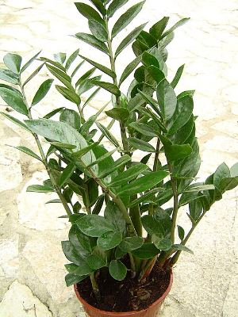 | Glücksfeder | User:WeFt | CC BY-SA 3.0 | Commons |
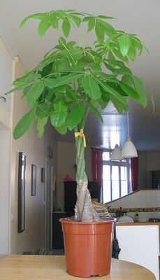 | Glückskastanie | mauroguanandi | CC BY 2.0 | Commons |
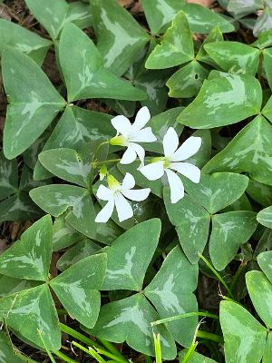 | Glücksklee | Gabriel Collares | CC BY 4.0 | Commons |
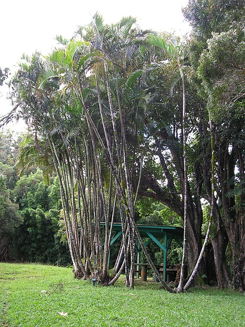 | Goldfruchtpalme | Forest & Kim Starr | CC BY 3.0 | Commons |
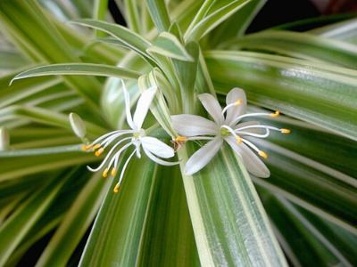 | Grünlilie | Juan Carlos Fonseca Mata | CC BY-SA 4.0 | Commons |
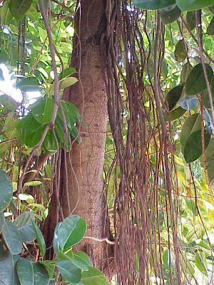 | Gummibaum | unbekannt | CC BY-SA 3.0 | Commons |
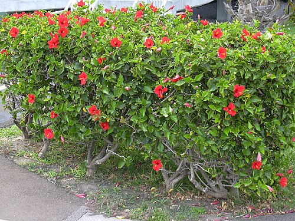 | Hibiskus | Forest & Kim Starr | CC BY 3.0 | Commons |
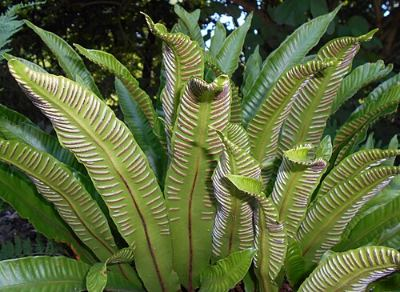 | Hirschzungenfarn | Salicyna | CC BY-SA 4.0 | Commons |
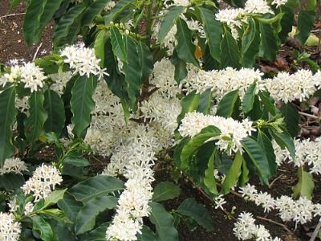 | Kaffeepflanze | Franz Eugen Köhler, Köhler's Medizinal-Pflanzen | Public domain | Commons |
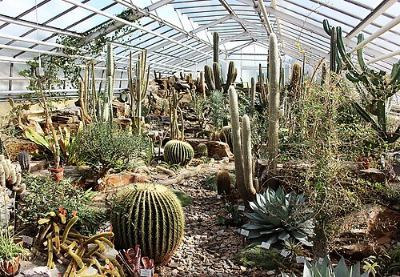 | Kaktus | Usien | CC BY-SA 3.0 | Commons |
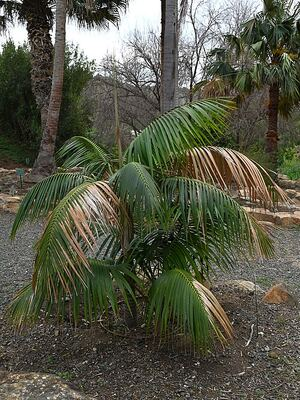 | Kentia-Palme | Black Diamond Images | CC BY 2.0 | Commons |
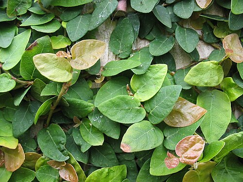 | Kletterfeige | Ixitixel | CC BY-SA 3.0 | Commons |
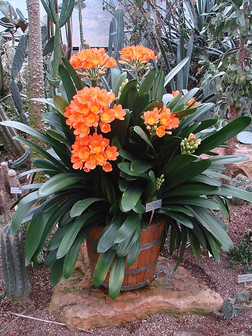 | Klivie | Guérin Nicolas (messages) | CC BY-SA 3.0 | Commons |
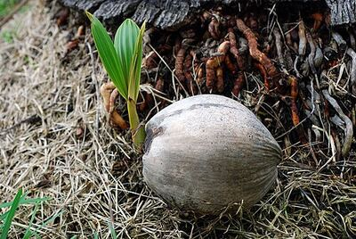 | Kokospalme | Forest & Kim Starr | CC BY 3.0 | Commons |
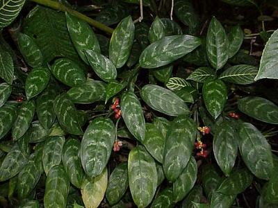 | Kolbenfaden | Kurt Stüber [1] | CC BY-SA 3.0 | Commons |
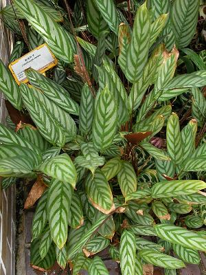 | Korbmarante | Tequila | CC BY-SA 3.0 | Commons |
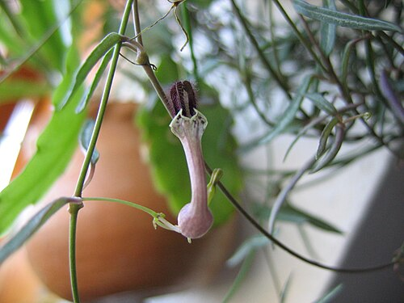 | Leuchterblume | Engeser | CC BY-SA 4.0 | Commons |
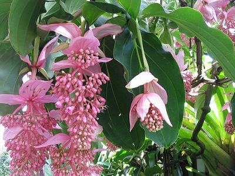 | Medinilla | No machine-readable author provided. Alberto Salguero assumed (based on copyrigh | CC BY-SA 3.0 | Commons |
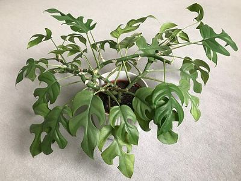 | Mini-Monstera | Jule.Kat | CC BY-SA 4.0 | Commons |
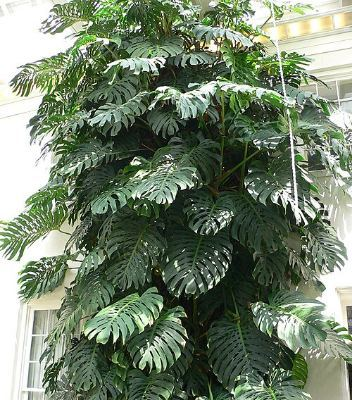 | Monstera | unbekannt | CC BY-SA 3.0 | Commons |
| Monstera adansonii | KENPEI | CC BY-SA 3.0 | Commons | |
| Monstera Variegata | unbekannt | CC BY-SA 3.0 | Commons | |
| Nestfarn | Vincent Malloy | CC BY-SA 4.0 | Commons | |
| Orchidee | unbekannt | CC BY-SA 3.0 | Commons | |
| Peperomie | Forest & Kim Starr | CC BY 3.0 | Commons | |
| Pfeilwurz | Ping an Chang | CC BY-SA 4.0 | Commons | |
 | Philodendron | Forest & Kim Starr | CC BY 3.0 | Commons |
| Philodendron Birkin | Forest & Kim Starr | CC BY 3.0 | Commons | |
 | Philodendron gloriosum | Forest & Kim Starr | CC BY 3.0 | Commons |
 | Philodendron Micans | Forest & Kim Starr | CC BY 3.0 | Commons |
 | Philodendron Pink Princess | Forest & Kim Starr | CC BY 3.0 | Commons |
| Purpurtute | unbekannt | CC BY-SA 3.0 | Commons | |
| Schusterpalme | frau-doktor | Public domain | Commons | |
| Strahlenaralie | Forest & Kim Starr | CC BY 3.0 | Commons | |
| Strelitzie | User:BotBln | CC BY-SA 3.0 | Commons | |
| Stromanthe Triostar | Aleph500Dadamz | CC BY-SA 4.0 | Commons | |
| Sukkulente | Raul654 | CC BY-SA 3.0 | Commons | |
| Tillandsie | Dick Culbert from Gibsons, B.C., Canada | CC BY 2.0 | Commons | |
| Ufopflanze | Pepe-MS | CC BY-SA 3.0 | Commons | |
| Usambaraveilchen | Wildfeuer | CC BY-SA 3.0 | Commons | |
| Wachsblume | Frank Vincentz | CC BY-SA 3.0 | Commons | |
| Wachsblume Hoya kerrii | Hobbykafe | CC BY-SA 3.0 | Commons | |
| Weihnachtsstern | Frank Vincentz | CC BY-SA 3.0 | Commons | |
| Yucca | Daderot | CC0 | Commons | |
| Zebrapflanze | WayneRay | CC0 | Commons | |
| Zimmeraralie | No machine-readable author provided. MPF assumed (based on copyright claims). | CC BY 2.5 | Commons | |
| Zimmerfarn | unbekannt | CC BY-SA 3.0 | Commons | |
| Zimmerlinde | yakovlev.alexey from Moscow, Russia | CC BY-SA 2.0 | Commons | |
| Zimmerpalme | Tequila 13:54, 24 June 2007 (UTC) | CC BY-SA 3.0 | Commons |